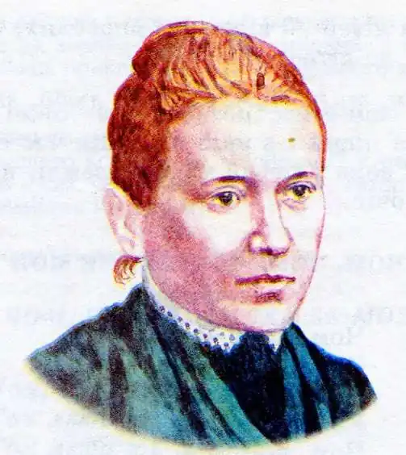
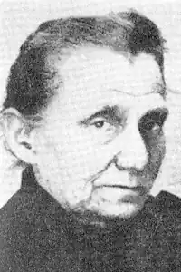

Костянтина Іванівна Малицька (*30 травня 1872, Кропивник, Калуського району Івано-Франківської області — †17 березня 1947, Львів) — українська письменниця, педагог, діячка культурно-освітніх товариств у Галичині. Здобувши кваліфікацію педагога, вона все життя провела, вчителюючи та в громадських починах, в галицьких та буковинських селах і містечках. Працювала під літературними псевдонімами: Віра Лебедова, Чайка Дністрова. Найбільше прославилась як автор числених творів для дітей та популярних пісень "Чом, чом, чом, земле моя…", "У Січі, у Січі гуртуймось брати".
Біографічна замальовка
Костянтина Малицька народилася 30 травня 1872 року в селі Кропивник Калуського повіту (теперішнього Калуського району, Івано-Франківської області). Батько майбутньої письменниці був парохом місцевої громади, а й мати, також, походила з родини священників (Гетьманчуків) походила й мати Олена. Навчалася Костянтина у початковій та виділовій школах Станіслава, пізніше поступила до Львівської державної семінарії. Саме там вона починає віршувати. Будучи завсідником катедри Святого Юра у Львові (в якій знаходилася багата бібліотека), вона послуговувалася тамтешнім книжковим фондом і там вона вперше спробувала себе на літературному поприщі — Костянтина почала віршувати. У 1892 році, вона закінчила свої львівські науки і повертається на Станиславівщину, оселившись в Галичі, Костянтина працює вчителькою одинадцять років. Вже там почав яскраво виражатися організаторський та педагогічний талан цієї молодої сподвижниці. Спершу, вона як тільки облаштувалася, як педагог, заходилася навколо заснування-облаштування читальні "Просвіти", потім була активна її участь в церковному хорі. Незабаром, про молоду і енергійну українську учительку заговорили в окрузі, і, як наслідок, її діяльність викликала занепокоєння серед тамтешніх москвофілів та осіб пропольської орієнтації, і завдяки їх "старанню" Чайку Дністровую (такого собі літературного псевдо взяла собі Костянтина у Галичі) в 1903 році переводять до далекого села Бєча. Того ж таки року розпочався Буковинський період життя Малицької — цьому посприяв тодішній інспектор шкіл Буковини О. Попович, який запросив літератора-учительку в село Лужани. Це велике буковинське село знаходилося поряд Чернівців, що дало можливість українському педагогові-сподвижнику познайомилася з редакторами газети "Буковина" Я. Веселовським та журналу "Промінь" І. Герасимовичем. А творча та життєва енергія сподвигнула Костянтину до нових творчих й громадських починів: вона провела велику роботу з організації численних жіночих гуртків по селах округи та стала, в травні 1905 року, натхненником при заснуванні "Жіночої громади". Поголос про педагога-організатора пішов далек за межі округи, а побратими-українці не могли нахвалитися її діями. Тому нічого дивного не було, що 1906 року народна учителька отримала запрошення попрацювати в першій українській приватній дівочій школі ім. Т. Шевченка, заснованій Українським Педагогічним товариством в столиці Галичини — Львові. Повернення до Львова — стає новим імпульсом для цієї жінки — громадського лідера. Окрім учителювання вона поринула в числені українські громадські зачинання та продовжила свої творчі розробки. Починаючи з 1906 року і аж до початку 1-ї Світової війни (1914 рік) вона редагує журнал "Дзвінок", працює в педагогічних товариствах: "Рідна школа", "Крайове товариство охорони дітей і опіки над молоддю" та активно співпрацює з "Просвітою". 1-а Світова війна стала поворотним моментом в долі Костянтини Малицької. Ще будучи зачинателем фонду "На потреби України" в 1912 році спільно з М. Білецькою вона помагала багатьом творчим та суспільним діянням української громади, а з часів війни цей фонд став матеріальною допомогою для Українських Січових Стрільців. Воєнна кампанія, а особливо участь в ній першої суто української військової формації, надихнула Костянтину на чималий пласт патріотичних пісень, які миттєво розійшлися поміж "січовиків". Але короткотермінове захоплення Галичини російськими військами — перервало життєвий запал Малицької. Якимсь чином, вона не встигла виїхати з прифронтової смуги й була захоплена царськими посіпаками, які довго не панькалися з українською учителькою та відомою поетесою-січовичкою — миттєво спровадили її подалі від українських терен. Закинувши палку українку за тисячі верст від України — вони мали намір Сибіром зломити її морально — але не на ту напали. Енергійна будителька народних мав й тут знайшла собі раду — згуртувавши числених українських переселенців навколо їх духовного стрижня — мови. І зорганізувала однодумців на заснування української школи в далекім Сибіру і стала першою вчителькою "Української школи імені І. Котляревського". Небезпечна для російської монархії галичанка була виселена в 1915 році Приангарський край, в село Пінчугу, в тім краї вона зазнайомилась з висланцями з багатьох інших народів, а вже незабаром, після жовтневого перевороту 1917 року, Костянтина Малицька активно включилася в культурне життя свого місця перебування. Найбільше зусиль було покладено на зачинання й утримання української школи ім. Котляревського в та підтримки українців в Красноярському краї, але й творчість свою вона не полишала, хоча все те написане було в щоденник та пройняте тугою за Батьківщиною. А в 1921 році заходами Констянтини Малицької та її українських учнів школа дала в Красноярську перший український Шевченківський концерт, від якого були в захваті всі його учаники. І того ж, 1921 року, доля привернулася до Костянтини й вона отримала змогу повернутися в Галичину. Повернувшись до Львова, Костянтина Малицька одразу включається в громадську діяльність, ніби намагається наверстати впущені роки царського заслання. Вона багато сил і енергії віддає розвитку української школи, і особливо її рідної Дівочої школи імені Тараса Шевченка. Тоді ж вона захоплюється кооперативним рухом, створює крамниці для фінансової допомоги освітянам, працює в психотехнічній секції, яка запровадила в школах тестування, анкетування. У 1934 році, при її безпосередньому сприянні, були підготовлені понад 500 тестів для визначення в учнів ступеня концентрації їх уваги, абстрактного мислення, зорової та вербальної пам’яті, вміння орієнтуватися в просторі. Костянтина Іванівна обстоювала необхідність перебудови шкільництва, її непокоїла проблема відірваності змісту навчання від життя та суттєвої відмінності навчання в міських та сільських громадах.